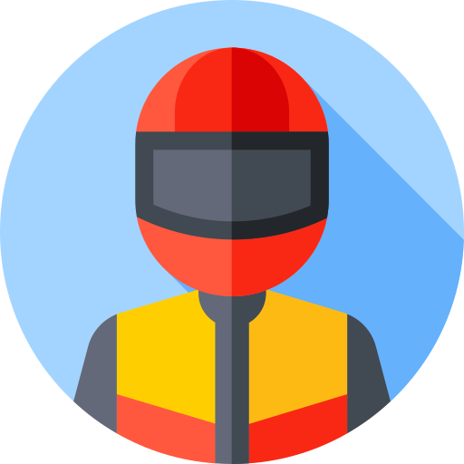

Aryan Ankolekar
Hi folks! I'm Aryan, a 3rd year Computer Science undergrad at KLE Tech. I enjoy reading novels, watching Formula 1, and both listening to and playing music. I'm especially interested in machine learning and always open to learning new things and exploring fresh ideas.
Quick Reads
Technical Skills
Programming Languages: Python, C, C++, JavaScript, HTML, CSS, SQL.
Tools & Frameworks: React.js, Node.js, Express.js, Tailwind CSS, AWS, Cloudflare, Docker, Kubernetes, MySQL, MongoDB, PostgreSQL, Git, GitHub
Soft Skills
Problem Solving, Communication, Teamwork and Collaboration, Leadership and Initiative, Time Management.
Experience & Projects
Project with NVIDIA in collaboration with KLE Tech
- Music Recommendation using Multi-hop RAG: Implemented a personalized recommendation engine using retrieval-augmented generation.
- Multi-modal Integration for Advanced NSCLC Recurrence Prediction: Combined clinical, genomic, and imaging modalities for effective cancer prognosis with a prediction accuracy of 91%.
- Low-light Image Enhancement: Enhanced poor lighting conditions using a hybrid of Retinex theory and U-Net architecture. with the SSIM score of 0.8412 with the best MSE (0.0167) and MAE (0.1050),